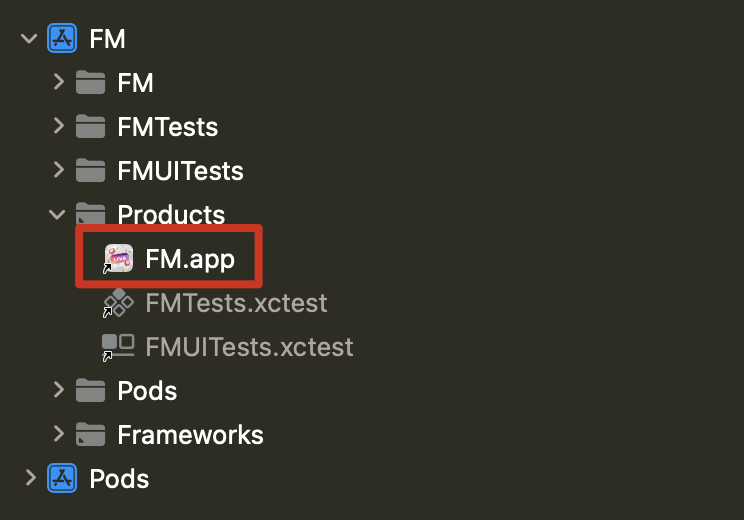
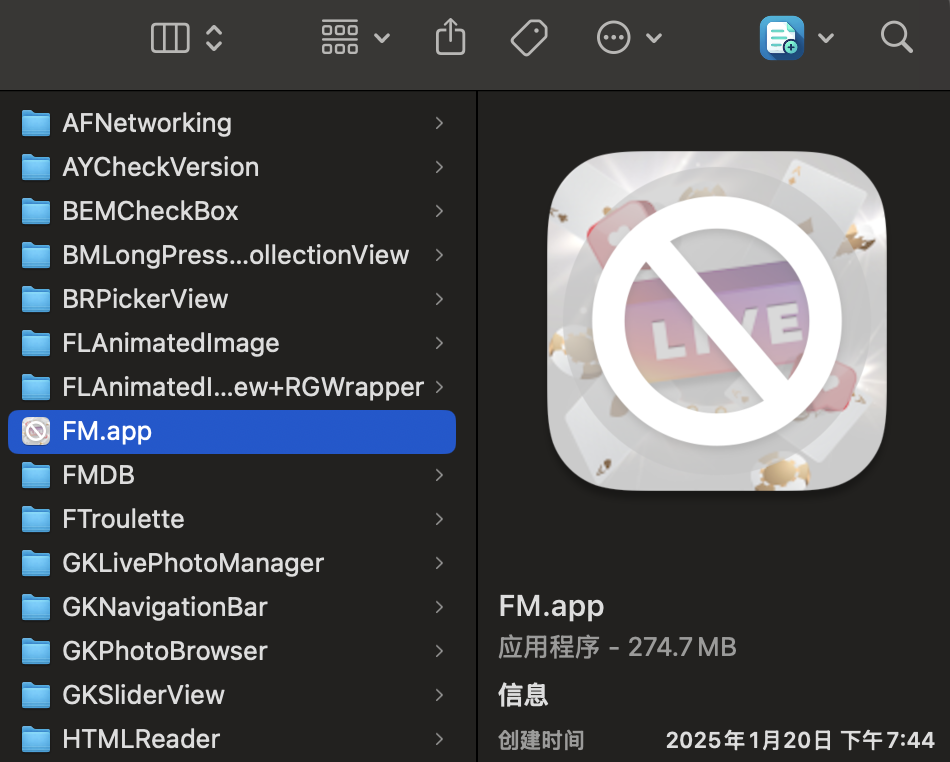

1、苹果端上架#
1.1、一些基础知识#
1.1.1、一个完整可用的*.ipa包，包括：#
- 签名区段（Code Signature Section）：
- 验证应用程序的完整性，确保代码没有被篡改；
- 由 Apple 的签名工具（如
codesign）在应用打包过程中生成； - 位置：位于应用二进制文件的一个独立区域，通常标记为
__LINKEDIT段中的__code_signature； - 内容：
- 哈希值：对应用的代码段（包括所有可执行文件和动态库）进行分块后生成的哈希值；
- 签名证书：包含开发者账号的身份信息，用于验证签名合法性；
- 加密信息：使用苹果的私钥对哈希值进行加密，确保签名不可伪造；
- 验证：系统通过公钥解密签名，并对哈希值进行比对。如果不一致，应用将无法运行；
- 代码区段（Code Section）：
- 代码区段存储的是应用的实际可执行代码，iOS 系统会通过签名区段验证代码区段的完整性；
- 位置：通常位于 Mach-O 文件的
__TEXT段中的__text区域。 - 内容：汇编指令（编译后的二进制指令）以及常量数据
- 保护机制：
- 运行时校验：iOS 系统在运行应用时会加载签名区段，并验证代码区段的完整性。如果签名无效，应用无法启动；
- iOS 系统会加载代码区段到内存中，并对其设置为只读；
- 禁止动态修改代码段，以防止代码注入攻击；
- 沙盒机制：签名与沙盒机制配合，确保每个应用只能运行经过认证的代码，防止恶意代码运行；iOS系统“越狱”会打破沙盒机制，虽然会带来无限制的安装体验，但是也会随之而来带来显而易见的安全风险
1.1.2、iOS.App 签名的分类#
flowchart LR
%% 定义统一的左对齐样式
classDef leftAlign fill:#fff,stroke:#333,stroke-width:2px,text-align:left;
%% 定义特殊样式（黄底黑字）
classDef yellowBgByBlackText fill:#ff0,color:#000,stroke:#333,stroke-width:2px,text-align:left;
%% 定义特殊样式（浅蓝色底黑字）
classDef lightBlueBgByBlackText fill:#add8e6,color:#000,stroke:#333,stroke-width:2px,text-align:left;
%% 主体流程
A[iOS.App 签名的分类] --> B1[App Store（几乎用于白产）<br/>灰黑产如果需要上架此平台需要受到相当强力的监管，需要用到损耗掉无数多个苹果个人开发账户<br/>1、个人开发者账户至少是需要手机号码，在某些国家或者地区，手机号码受到严格监管（实名认证）；<br/>2、如果考虑使用虚拟号码接受短信，那么虚拟号码一旦过期忘记续费即会被回收，那么这个苹果账户因为无法正常接受短信验证码，接近报废<br/>3、无论是个人开发者还是公司开发者，正常的会员费用都是$99/年<br/>4、公司开发者需提交营业执照（法人资料）以获取全球通用的邓白氏编码<br/>5、马甲包（价格略贵，代码需要做混淆处理，且容易被同行举报而下架）<br/>]
A --> B2[非App Store上架（分发）]
B2 --> B2_1[苹果企业签<br/>1、适合需要企业级分发的场景，允许通过 URL 下载<br/>2、不受 App Store 审核限制，但对签名证书依赖较大<br/>3、一个企业签很贵（一度市场售价达百万人民币）名下可以签发很多iOS.App<br/>4、如果企业签被吊销，那么即使以前成功签发的App也不可使用]
B2 --> B2_2[苹果超级签<br/>1、不需要企业账号，可直接分发<br/>2、通过 iOS 描述文件安装，灵活性较高]
B2 --> B2_3[MDM 签名（Mobile Device Management）<br/>通过 MDM 管理分发应用，适合需要远程设备控制的企业场景<br/>]
B2 --> B2_4[内测签名（TestFlight 分发）<br/>1、适合在 App Store 环境下进行应用的内测分发，无需额外签名证书<br/>2、需要通过苹果审核]
B2 --> B2_5[Ad Hoc 签名<br/>适合小范围分发应用，需要设备 UDID 注册且有数量限制（每年最多100台设备）<br/>]
B2 --> B2_6[自由签名（Jailbreak）<br/>针对越狱设备，无限制安装iOS.APP，用户主从性较高<br/>]
B2 --> B2_7[开发者签名（Development Certificate）<br/>1、开发阶段，用于将应用安装到注册的测试设备上；<br/>2、需要设备的 UDID 注册到开发者账号中（最多 100 台设备）；<br/>3、签名有效期为一年，需定期更新；<br/>]
%% 应用样式到所有节点
class B2,B2_1,B2_2,B2_3,B2_4 yellowBgByBlackText;
class B2_5,B2_6,B2_7 lightBlueBgByBlackText;
class B1,B2,B2_1,B2_2,B2_3,B2_4,B2_5,B2_6,B2_7 leftAlign;1.1.3、*.p12文件（也称为 PKCS #12 文件）#
-
用于存储加密证书和私钥的容器文件格式；
-
它在 数字证书 和 加密密钥 管理中非常常见，尤其在 iOS 开发中；
-
通过 Xcode 和 命令行工具（如
codesign）使用*.p12文件进行签名；codesign -s "iPhone Developer: Your Name (XXXXXXXXXX)" --deep --force /path/to/your/app.app -
可以方便地从一个开发环境导出，传输到另一个开发环境或与他人共享；
-
保存开发者证书和私钥：
- 它包含用于签名的 私钥 和对应的 公钥证书（开发者证书）。可以将其导入到 macOS 的 钥匙串 中；
- 私钥是生成和验证签名所必需的，而公钥证书是用于验证签名的；
- iOS 应用需要这个
*.p12文件来在打包和发布应用时进行签名；
-
生成
*.p12文件的步骤#-
从开发者账号下载证书：（个别受限地区（例如：柬埔寨）需要使用VPN才能正确访问苹果开发者官网）
- 登录 Apple Developer Portal，生成并下载开发者证书。
-
使用钥匙串访问导出
*.p12文件：-
将下载的开发者证书双击添加到 macOS 的 钥匙串访问（Keychain Access）中；
security import /path/to/your/certificate.p12 -k ~/Library/Keychains/login.keychain -
在钥匙串访问中找到证书及其对应的私钥，右键点击并选择“导出”；
-
选择导出格式为
*.p12，设置密码进行加密（可以不要密码），保护私钥；
-
-
保存和传输
*.p12文件：- 将导出的
*.p12文件保存到安全的位置，并确保密码的保密性； - 通过
*.p12文件，可以在不同的开发机器间共享证书和私钥；
- 将导出的
-
1.1.4、命令行工具#
-
签名应用
codesign -s "Certificate Name" --deep --force /path/to/app.app -
列出所有证书
-
security find-identity -v -p codesigning
-
-
签名状态检查
--verify：验证签名是否有效--deep：验证所有嵌套的内容
codesign --verify --deep /path/to/your/app.app -
显示签名信息
-
--display：显示签名信息。 -
--verbose=4：提供详细输出，帮助你查看证书和签名的详细信息。
codesign --display --verbose=4 /path/to/your/app.app -
1.2、上架 App Store流程（关键点）#
-
申请相关权限（如需要）
- 需要访问用户数据（如位置、摄像头等）时，添加隐私权限描述；
- 特殊权限（如健康、金融、VPN）需提交补充说明；
-
准备应用资源
- 应用名称、描述、关键词、分类；
- App 图标（1024x1024px，无圆角）；
- 截图：根据设备（iPhone、iPad、Mac）提供不同分辨率截图；
- 预览视频（可选，展示应用功能）；
-
提交应用
- 创建 App
- 登录 App Store Connect
- 在 我的 App 中，点击 + 创建新应用，填写基本信息：
- 应用名称
- 主语言
- 包名（Bundle ID）
- 用户访问权限设置（是否需要登录）
- 上传应用包
- 使用 Xcode 将应用上传到 App Store Connect：在 Xcode 中选择菜单 Product > Archive，然后上传
- 确认上传成功后，检查 App Store Connect 中的构建版本
- 填写元数据
- 应用描述、关键词、分类、隐私政策链接；
- 提供支持的最低设备和版本要求；
- 设置价格（免费或收费）；
- 提交审核
- 填写审核信息（如测试账号、视频演示等）；
- 选择发布选项
- 手动发布；
- 审核通过后立即发布；
- 创建 App
-
App 审核
-
审核时间：
- 通常需要 1-3 个工作日；
- 快速通道（可选）：如果应用涉及紧急问题，可以申请加急审核。
-
如果一直被打回修改，那么每次间隔的时间将会变长；
-
审核被拒
- 处理被拒：查看拒绝原因（App Store Connect 的消息中心）。修复问题后重新提交。
- 如果有异议，可以通过 App Store Connect > 联系支持 提交申诉；
-
机器扫描：
- 查看是否调用违规Api（已封禁或者过期的Api）,比如热更新相关的Api被明令禁止调用；
- 查看是否有后台开关：上架以后通过后台开关来改变App的页面展示情况，以跳过审核；
- 是否包含一些有害的指令；
- 查看是否过度索取权限，危害到用户隐私；
- 是否是马甲包特征：马甲包需要做代码混淆处理，否则会被拒；
-
人工审核：
-
App功能相关
- App 启动时间不能超过 15 秒；
- App 在启动或运行时不能发生崩溃；
- App无法完成其核心功能（如地图应用无法显示地图）；
- App 功能过于简单，如仅是一个
WebView； - 与其他 App 功能重复，缺乏创新；
-
兼容性和适配
-
App 不兼容最新的 iOS 版本或硬件设备；
-
未正确适配不同屏幕尺寸（如 iPhone SE、iPad）；
-
App 导致设备过热或耗电异常；
-
应用仅支持英文但提交到非英文市场；
-
-
购买相关
- 未通过 Apple 的内购系统处理虚拟商品或服务；
- 内购流程设计不清晰，用户无法完成购买；
-
审核测试相关
- 提交的测试账号无效，导致审核人员无法测试；
- 未提供复杂功能的操作指引；
-
注册/登录问题
- 未支持 Apple 登录（如需要第三方登录时）；
- 强制用户注册或登录但未提供访客模式；
-
内容相关：
- 虚假或误导信息；
- 知识产权问题；
- 低质量内容：包含违法、色情、暴力或歧视性内容。涉及赌博、毒品或武器的内容未明确限制；
-
违反用户隐私政策；
-
未符合当地法律；
- 在特定国家或地区提供服务，但未屏蔽不适用的用户；
- App 涉及加密技术但未提交相关声明；
- App 发布区域与内容不符合当地法规（如 VPN 服务未授权）；
-
赌博类 App
- 涉及赌博内容但未获得合法授权；
- 提供赌博服务但未限制未成年人使用；
-
UI/UX 问题
- App 界面设计混乱，操作不直观；
- 按钮或文本与背景颜色对比度不足，影响可读性；
- 未正确使用 Apple 的设计元素（如状态栏、导航栏）；
- 自定义界面元素导致用户体验不佳；
-
广告干扰
- 弹窗广告过多或难以关闭；
- 提供虚假或误导性广告内容；
-
构建相关问题
- 提交的 App 包含调试符号或测试代码；
- App 包体积过大（超过 200MB）但未优化；
-
提交相关问题
- 缺少必要的截图或预览视频；
- 提交的构建版本与元数据不一致；
- App 的分类标签与内容不符；
- 年龄分级与实际内容不匹配；
- 提供虚假的促销信息（如“限时免费”）；
- 免费 App 中包含收费内容但未明确说明；
-
-
其他：
- 如果涉及到支付流程（非加密货币）那么苹果会抽取30%的苹果税（包含App内购）；
- 苹果的审核流程是黑盒机制，本意是不希望你去揣测而探寻其规则的漏洞；
- 苹果的审核条款的具体执行细则会经常变更，导致开发者如果专门去应付，会造成较大开销；
1.3、非Apple官方渠道宣发：第三方签名#
-
锚定我们需要处理的二进制文件（打包程序的初级产物）：


-
【MacOS】放在iOS项目工程根目录下，自动打包并输出为ipa文件.command#!/bin/zsh print_color() { local COLOR="$1" local TEXT="$2" local RESET="\033[0m" echo "${COLOR}${TEXT}${RESET}" } _JobsPrint_Red() { print_color "\033[1;31m" "$1" } _JobsPrint_Green() { print_color "\033[1;32m" "$1" } # 打印 "Jobs" logo jobs_logo() { local border="==" local width=49 # 根据logo的宽度调整 local top_bottom_border=$(printf '%0.1s' "${border}"{1..$width}) local logo=" ||${top_bottom_border}|| || JJJJJJJJ oooooo bb SSSSSSSSSS || || JJ oo oo bb SS SS || || JJ oo oo bb SS || || JJ oo oo bbbbbbbbb SSSSSSSSSS || || J JJ oo oo bb bb SS || || JJ JJ oo oo bb bb SS SS || || JJJJJJ oooooo bbbbbbbb SSSSSSSSSS || ||${top_bottom_border}|| " _JobsPrint_Green "$logo" } # 自述信息 self_intro() { _JobsPrint_Green "【MacOS】放在iOS项目工程根目录下，自动打包并输出为ipa文件.）" _JobsPrint_Red "按回车键继续..." read } setup_xcode() { local XCODE_DIR="/Applications/Xcode.app" if [ ! -d "$XCODE_DIR" ]; then _JobsPrint_Red "Xcode.app not found in Applications." exit 1 fi _JobsPrint_Green "Found Xcode.app at: $XCODE_DIR" } install_package_application() { local PACKAGE_DIR="$1/Contents/Developer/Platforms/iPhoneOS.platform/Developer/usr/bin" local PACKAGE_NAME="PackageApplication" local PACKAGE_ZIP="${PACKAGE_NAME}.zip" local PACKAGE_PATH="${PACKAGE_DIR}/${PACKAGE_NAME}" if [ ! -f "$PACKAGE_PATH" ]; then curl -# -OL "https://github.com/JackSteven/PackageApplication/raw/master/${PACKAGE_ZIP}" && unzip -o "$PACKAGE_ZIP" && mv "$PACKAGE_NAME" "$PACKAGE_DIR" && rm "$PACKAGE_ZIP" if [ $? -ne 0 ]; then _JobsPrint_Red "Failed to install $PACKAGE_NAME." exit 2 fi sudo xcode-select -switch "$1/Contents/Developer/" chmod +x "$PACKAGE_PATH" _JobsPrint_Green "$PACKAGE_NAME installed successfully!" fi } build_app() { local build_command="xcodebuild" local workspace=$(find . -name "*.xcworkspace" -print -quit) local project=$(find . -name "*.xcodeproj" -print -quit) if [[ -n "$workspace" ]]; then scheme="${workspace%%.*}" build_command+=" -workspace $workspace -scheme $scheme" elif [[ -n "$project" ]]; then scheme="${project%%.*}" build_command+=" -project $project -scheme $scheme" else _JobsPrint_Red "No workspace or project found." exit 3 fi local sdk=$(xcodebuild -showBuildSettings | awk '/SDK_NAME =/ {print $3}') build_command+=" -configuration Release -sdk $sdk" echo "Executing build command: $build_command" if ! $build_command; then _JobsPrint_Red "Build failed, please check!" exit 4 fi } main() { _JobsPrint_Green "正在开始编译打包 ipa" jobs_logo self_intro setup_xcode install_package_application "/Applications/Xcode.app" build_app _JobsPrint_Green "编译打包 ipa 成功完成！！！" } main -
给到第三方进行签名。一般是给一个网站以及账密（需要先付费），你将通过上述步骤得出的后缀名为
.ipa的包上传到网站上进行签名，成功后下载